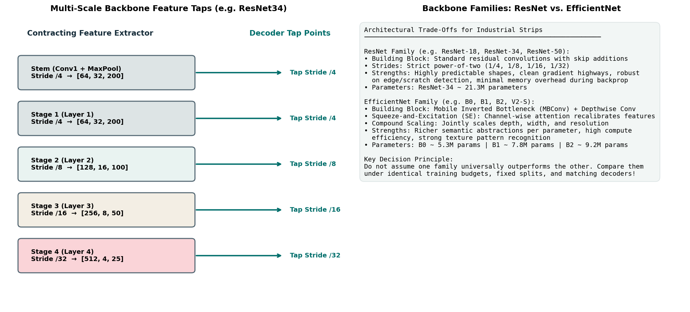

Pretrained Backbones & Transfer Learning: ResNet to EfficientNet
In Milestone 2, your baseline U-Net was initialized with random Gaussian weights. When trained from scratch, the network faced a difficult optimization task: it had to discover basic visual primitives (such as edge filters, contrast gradients, and texture detectors) while simultaneously learning to identify rare metallurgical defects from a small training dataset.
In computer vision, training from scratch on small or imbalanced datasets is rarely optimal. Transfer learning allows you to leverage neural networks trained on massive public corpora (such as ImageNet-1k, containing over 1.28 million natural images across 1,000 categories). By adopting a pretrained backbone as your encoder, your model begins training with an established visual vocabulary ready on day one.
This guide explains what pretrained backbones learn, compares the architectural mechanics of the ResNet and EfficientNet families, details how decoders extract multi-scale feature hierarchies, examines the trade-offs of feature freezing versus full fine-tuning, and provides a rigorous, controlled experimentation protocol to verify whether transfer learning truly improves your model.
1. The Transfer Learning Advantage in Industrial Anomaly Detection
Why should a neural network trained to identify golden retrievers, freight trains, and espresso makers help you segment microscopic cracks on cold-rolled steel?
The answer lies in the hierarchical nature of visual representations discovered by deep convolutional networks (Yosinski et al., 2014):
Visual Hierarchy in Pretrained CNNs:
Early Layers (Stage 1-2): General Visual Primitives (Gabor edges, blobs, local gradients)
Mid Layers (Stage 3-4): Complex Textural Patterns (grain textures, junctions, lattices)
Deep Layers (Stage 5): High-Level Semantic Motifs (parts, global context, objects)
Figure 2.1: Multi-scale feature tap points in a pretrained backbone. Early layers supply high-resolution edge maps to the decoder, while deep layers provide semantic anomaly classification.1. General Visual Primitives Are Domain-Agnostic
The filters learned in the first two stages of an ImageNet model are almost indistinguishable from classical Gabor wavelets and Sobel gradient operators. They detect high-contrast boundaries, directional ridges, and color/intensity transitions. A hairline scratch on steel triggers the exact same edge-detection neurons as the outline of a violin in ImageNet!
2. Feature Reusability with Limited Data
In industrial anomaly detection, defect samples are scarce. Anomaly classes like defect_b appear in only a tiny fraction of images. A randomly initialized model requires thousands of positive gradient updates just to shape its early convolutional kernels into coherent edge detectors. A pretrained backbone already possesses these detectors, allowing the optimizer to focus its limited updates on learning the subtle textural signatures of anomalies.
3. What Parts Are Reused?
When repurposing a classification network for segmentation:
- RETAINED: The convolutional stem and all convolutional feature stages (the "body").
- DISCARDED: The global average pooling layer, the flattening operator, and the final 1,000-class fully connected classification layer (the "head").
- ADDED: A task-specific segmentation decoder that consumes feature maps tapped from multiple intermediate stages of the backbone.
2. Comparing Backbone Families: ResNet vs. EfficientNet
Rather than treating backbones as black boxes, you should understand how their internal building blocks differ. Two of the most successful and widely deployed backbone families in competitive segmentation are ResNet and EfficientNet.
A. The ResNet Family: Residual Highway Mechanics
Introduced by He et al. (2016), the Residual Network (ResNet) family solved the vanishing gradient problem in very deep networks using identity skip additions.
ResNet Residual Block:
x ──┬───────────────────────────────┐ (Identity Shortcut)
│ │
▼ ▼
[Conv 3×3] ──► [BN] ──► [ReLU] ──► [Conv 3×3] ──► [BN] ──► (+) ──► [ReLU] ──► OutputMathematical Formulation
Because gradients flow directly through the identity shortcut (\(+ x\)) during backpropagation, ResNet avoids gradient degradation even at 100+ layers.
Structural Characteristics
- Homogeneous Blocks: Built from uniform sequences of \(3 \times 3\) convolutions (or bottleneck blocks \(1 \times 1 \to 3 \times 3 \to 1 \times 1\) in ResNet-50 and deeper).
- Predictable Striding: Consistently downsamples by exactly \(2\times\) at the start of each stage (\(/4, /8, /16, /32\)).
- Clean Feature Taps: Feature map channel counts are predictable powers of two: \(64, 128, 256, 512\) (ResNet-34) or \(256, 512, 1024, 2048\) (ResNet-50).
- Strengths: Highly stable gradients, low memory overhead per parameter, excellent boundary extraction on high-contrast edge defects (scratches).
B. The EfficientNet Family: Compound Scaling & MBConv
Introduced by Tan & Le (2019), the EfficientNet family redesigned backbone architecture through principled compound scaling, balancing network depth, width, and resolution using neural architecture search.
EfficientNet MBConv Block (Inverted Residual + Squeeze-and-Excitation):
x ──┬──────────────────────────────────────────────────────────────┐ (Identity Shortcut)
│ │
▼ ▼
[1×1 Conv (Expand)] ──► [Depthwise 3×3 Conv] ──► [SE Block] ──► [1×1 Conv (Project)] ──► (+)Key Innovations
- Depthwise Separable Convolutions: Factorizes a standard convolution into a depthwise spatial filter (1 filter per input channel) and a pointwise \(1 \times 1\) projection filter across channels. This slashes FLOPs and parameter counts by \(80\%\text{--}90\%\).
- Inverted Residuals: Unlike ResNet (which compresses channels before convolution), MBConv expands channel dimensions internally (\(6\times\) expansion) to compute rich non-linear representations in high-dimensional space before projecting back down.
-
Squeeze-and-Excitation (SE) Attention: Applies explicit channel-wise recalibration. A global average pooling step computes channel descriptors, followed by a two-layer bottleneck MLP that outputs per-channel scaling weights \(s_c \in [0, 1]\):
\[s = \sigma\left( W_2 \cdot \text{ReLU}\left( W_1 \cdot \text{GAP}(x) \right) \right), \quad \tilde{x}_c = s_c \cdot x_c\]This allows the network to dynamically amplify feature channels that correspond to anomaly textures while dampening channels that capture normal background sheen.
Structural Characteristics
- High Parameter Efficiency: EfficientNet-B0 has only \(\sim 5.3\text{M}\) parameters compared to ResNet-34's \(\sim 21.3\text{M}\), yet achieves comparable or higher ImageNet accuracy.
- Heterogeneous Channels: Channel counts across stages do not follow strict powers of two (e.g., EfficientNet-B2 outputs stage channels of \(16, 24, 48, 120, 352\)).
- Strengths: High semantic expressiveness per parameter, strong at capturing subtle texture variations (such as metallurgical inclusions or patchy stains).
- Costs: Slower training throughput on certain GPUs due to the fragmented memory access patterns of depthwise convolutions.
Comparison of ResNet and EfficientNet Variants
| Backbone Model | Family | Parameters | GFLOPs (\(224 \times 224\)) | Stage Channels \([C_1, C_2, C_3, C_4, C_5]\) | Primary Architectural Trait |
|---|---|---|---|---|---|
| ResNet-18 | ResNet | \(11.7\text{M}\) | \(1.8\) | \([64, 64, 128, 256, 512]\) | Lightweight, fast training, residual skips. |
| ResNet-34 | ResNet | \(21.8\text{M}\) | \(3.6\) | \([64, 64, 128, 256, 512]\) | Proven segmentation workhorse; stable baseline. |
| ResNet-50 | ResNet | \(25.6\text{M}\) | \(4.1\) | \([64, 256, 512, 1024, 2048]\) | Bottleneck blocks; very wide feature channels. |
| EfficientNet-B0 | EfficientNet | \(5.3\text{M}\) | \(0.39\) | \([16, 24, 40, 112, 320]\) | Ultra-compact; MBConv + SE attention. |
| EfficientNet-B1 | EfficientNet | \(7.8\text{M}\) | \(0.70\) | \([16, 24, 40, 112, 320]\) | Modest compound depth/width expansion. |
| EfficientNet-B2 | EfficientNet | \(9.2\text{M}\) | \(1.0\) | \([16, 24, 48, 120, 352]\) | Excellent balance of capacity and memory efficiency. |
Note: Do not assume one backbone is universally superior for this competition. Your choice must be justified through controlled validation experiments on industrial strip data.
3. How Decoders Consume Multi-Scale Feature Taps
In modern segmentation libraries like segmentation_models_pytorch (SMP), a pretrained backbone is sliced into intermediate feature stages.
Consider an industrial strip input \([B, C_{\text{in}}, 128, 800]\) fed into a ResNet-34 backbone:
Backbone Slicing & Feature Tap Output:
Input: [B, C_in, 128, 800]
│
├─► Stem (Conv1 + MaxPool) ──► Tap 1: [B, 64, 32, 200] (Stride /4) ──► Decoder Level 1 Skip
├─► Stage 1 (Layer 1) ──► Tap 2: [B, 64, 32, 200] (Stride /4)
├─► Stage 2 (Layer 2) ──► Tap 3: [B, 128, 16, 100] (Stride /8) ──► Decoder Level 2 Skip
├─► Stage 3 (Layer 3) ──► Tap 4: [B, 256, 8, 50] (Stride /16) ──► Decoder Level 3 Skip
└─► Stage 4 (Layer 4) ──► Tap 5: [B, 512, 4, 25] (Stride /32) ──► Bottleneck InputWhen connecting a decoder (such as a U-Net or FPN decoder) to these tap points:
- The Bottleneck receives Tap 5 (\(4 \times 25\) pixels, \(512\) channels) and refines the most abstract semantic features.
- Decoder Upsampling Blocks progressively double spatial dimensions:
- \(4 \times 25 \to 8 \times 50\), concatenated with Tap 4 (\(256\) channels).
- \(8 \times 50 \to 16 \times 100\), concatenated with Tap 3 (\(128\) channels).
- \(16 \times 100 \to 32 \times 200\), concatenated with Tap 2 (\(64\) channels).
- \(32 \times 200 \to 128 \times 800\), restored via final upsampling convolutions to match original strip resolution.
Notice that because the backbone downsamples by \(32\times\), the input dimensions (\(128 \times 800\)) must be cleanly divisible by 32:
Both resolve to clean integer grid sizes without fractional truncation!
4. Fine-Tuning Strategies: Freezing vs. Full Fine-Tuning
When applying a pretrained backbone, you must decide how to update its parameters during training. Three strategies exist:
Strategy 1: Frozen Feature Extractor (Linear Probing)
Backbone Weights: FROZEN (requires_grad = False)
Decoder Weights: TRAINABLE (requires_grad = True)
Strategy 2: Full Fine-Tuning (End-to-End)
Backbone Weights: TRAINABLE with Global LR
Decoder Weights: TRAINABLE with Global LR
Strategy 3: Discriminative Learning Rates (Differential Fine-Tuning)
Backbone Weights: TRAINABLE with Low LR (e.g. 1e-4)
Decoder Weights: TRAINABLE with High LR (e.g. 1e-3)Trade-Off Analysis
| Strategy | Computational Cost | Risk of Catastrophic Forgetting | Domain Adaptation Ability | Best Use Case |
|---|---|---|---|---|
| Frozen Backbone | Lowest: No backward gradients computed for backbone. | Zero: Pretrained features remain intact. | Very Poor: Cannot adapt edge/texture filters to industrial surface physics. | Initial pipeline smoke tests or rapid prototyping. |
| Full Fine-Tuning | Standard. | Moderate: Large initial gradients from random decoder can disrupt pretrained filters. | High: Entire network adapts to strip anomalies. | Standard baseline; use learning rate warmup to protect backbone. |
| Discriminative LR | Standard. | Low: Backbone updates slowly while decoder learns rapidly. | Highest: Preserves general filters while refining domain specifics. | Advanced fine-tuning once baseline is established. |
The Role of Learning Rate Warmup
When training starts, the decoder is randomly initialized, producing massive random errors and chaotic gradients. If you apply full fine-tuning with a large initial learning rate, those chaotic gradients propagate back into the backbone and corrupt the pretrained weights in the very first epoch. To prevent this, use a learning rate warmup: start with a small learning rate (e.g., \(10\%\text{--}20\%\) of peak LR) for the first 2 to 3 epochs, allowing the decoder to stabilize before subjecting the backbone to large gradient updates.
5. Batch Normalization Behavior in Fine-Tuning
Batch Normalization (BatchNorm2d) is one of the most common sources of subtle bugs when fine-tuning pretrained vision models.
During ImageNet pretraining, BatchNorm computes running estimates of mean \(\mu\) and variance \(\sigma^2\) across millions of images with mini-batch sizes of 256 or 512.
When you fine-tune on high-resolution industrial strips (\(128 \times 800\)), GPU memory constraints often force you to train with small mini-batch sizes (such as batch size 4 or 8 per GPU):
- The Small Batch Instability: In mini-batches of size 4, the batch mean and variance fluctuate wildly. If BatchNorm recalculates statistics dynamically, noisy batch statistics destabilize the pretrained feature maps.
- Eval Mode Freezing (
track_running_stats=False): When training with very small batches, some practitioners freeze BatchNorm layers in evaluation mode (layer.eval()), forcing the network to use the stable running statistics learned from ImageNet rather than noisy local batch statistics.
6. Preprocessing Compatibility: Normalization Alignment
Pretrained backbones are calibrated to expect inputs normalized according to the distribution of their original pretraining dataset.
ImageNet Standard Statistics
Most torchvision and SMP backbones expect inputs normalized by:
The Local Dataset Z-Score Dilemma
In industrial steel inspection, line-scan images may have very different brightness distributions (e.g., dark steel surfaces with mean \(0.35\) and standard deviation \(0.12\)). If you normalize your input strips using local z-score normalization (\(\mu_{\text{strip}}, \sigma_{\text{strip}}\)), the input features will have zero mean and unit variance, but will not match the input scale expected by the first convolutional layer of the pretrained network.
Rule of Thumb:
- If using pretrained weights without an input adapter, apply the backbone's official ImageNet normalization statistics.
- If using local per-image z-score normalization, ensure the model's first layer has sufficient learning capacity to rescale the inputs, or train with an explicit input normalization layer.
7. Controlled Backbone Comparison Protocol
When experimenting with backbones, you must ensure that performance differences reflect true architectural advantages rather than confounding variables.
Controlled Comparison Protocol:
Fix: Validation Split (Canonical Fold 0)
Fix: Input Resolution (Native 128 × 800)
Fix: Output Head & Target Semantics (e.g. 4-Sigmoid, Multi-Label)
Fix: Loss Function (e.g. BCE + Soft Dice, alpha=0.5, beta=0.5)
Fix: Optimization Budget (30 Epochs, AdamW, Cosine Scheduler, Batch Size 16)
Fix: Evaluation Pipeline (Same threshold sweep tau in [0.3..0.8], same Dice metric)
Vary ONLY the Backbone:
Experiment A: From-Scratch Baseline (Random Weights)
Experiment B: Pretrained ResNet-34 (ImageNet Weights)
Experiment C: Pretrained EfficientNet-B0 (ImageNet Weights)
Experiment D: Pretrained EfficientNet-B2 (ImageNet Weights)By keeping all other factors identical, any difference in validation Dice score directly measures the empirical benefit of that specific backbone.
8. Common Implementation Pitfalls and Diagnostics
| Bug / Pitfall | Root Cause | Observable Symptom | Practical Diagnostic |
|---|---|---|---|
| Corrupted Pretrained Weights | Setting learning rate too high without warmup on epoch 1. | Training loss spikes to NaN or plateaus immediately; validation score drops below random init. |
Add a 2-epoch linear LR warmup; inspect first-epoch gradient norms. |
| Mismatched Normalization | Feeding raw \([0, 255]\) integer pixels into a pretrained backbone expecting normalized \([-2, +2]\) floats. | Activations saturate; gradients vanish in early layers. | Check image.min() and image.max() before model forward pass. |
| Decoder Channel Misconfiguration | Hardcoding decoder skip channels assuming ResNet, then swapping to EfficientNet. | RuntimeError: Given groups=1, weight of size [128, 64, 3, 3], expected input to have 64 channels, but got 48 channels. |
Use high-level model factories (such as SMP) that automatically configure decoder skip channels from the backbone metadata. |
Evaluating with model.train() |
Running validation loop without calling model.eval(). |
Validation Dice fluctuates wildly across identical evaluation batches due to running batch norm updates. | Explicitly call model.eval() and with torch.no_grad(): during validation. |
9. Ungraded Try-It Activity: Inspecting Backbone Feature Activations
Try this conceptual calculation:
Suppose you pass a \(128 \times 800\) strip through a ResNet-34 encoder.
- Recall the stage downsampling factors: Stage 1 (\(4\times\)), Stage 2 (\(8\times\)), Stage 3 (\(16\times\)), Stage 4 (\(32\times\)).
- What are the spatial dimensions \([H, W]\) at each of the 4 stages?
- Calculate the total number of spatial feature cells (\(H \times W\)) at Stage 1 vs. Stage 4.
- If a scratch has length \(200\text{ px}\) along the horizontal rolling axis:
- How many cells does it span at Stage 1?
- How many cells does it span at Stage 4?
Click here to view the worked solution
- Spatial dimensions:
- Stage 1 (\(4\times\) downsampling): \(128 / 4 = 32\), \(800 / 4 = 200 \to [32, 200]\).
- Stage 2 (\(8\times\) downsampling): \(128 / 8 = 16\), \(800 / 8 = 100 \to [16, 100]\).
- Stage 3 (\(16\times\) downsampling): \(128 / 16 = 8\), \(800 / 16 = 50 \to [8, 50]\).
- Stage 4 (\(32\times\) downsampling): \(128 / 32 = 4\), \(800 / 32 = 25 \to [4, 25]\).
- Total spatial feature cells:
- Stage 1: \(32 \times 200 = 6,400\text{ cells}\).
- Stage 4: \(4 \times 25 = 100\text{ cells}\).
- Spatial resolution decreases by a factor of \(64\times\) (\(6400 / 100 = 64\))!
- Scratch footprint:
- Stage 1: \(200 / 4 = 50\text{ cells}\) along the horizontal axis. The network has plenty of spatial granularity to track curved trajectories and localized breaks.
- Stage 4: \(200 / 32 = 6.25\text{ cells}\). The entire \(200\)-pixel scratch is compressed into roughly 6 cells, providing global context but coarse localization.
To verify how multi-scale feature maps are extracted and passed through skip connections on CPU, run:
👉 docs/milestone_3_student_guide/examples/toy_feature_extractor.py
10. Primary Sources & Further Reading
- He, K., Zhang, X., Ren, S., & Sun, J. (2016). Deep Residual Learning for Image Recognition. CVPR. arXiv:1512.03385. Introduced ResNet and residual learning.
- Tan, M., & Le, Q. V. (2019). EfficientNet: Rethinking Model Scaling for Convolutional Neural Networks. ICML. arXiv:1905.11946. Formulated compound scaling and inverted bottleneck architecture.
- Yosinski, J., Clune, J., Bengio, Y., & Lipson, H. (2014). How transferable are features in deep neural networks?. NeurIPS. arXiv:1411.1792. Empirical investigation into feature generality across layers.
- Hu, J., Shen, L., & Sun, G. (2018). Squeeze-and-Excitation Networks. CVPR. arXiv:1709.01507. Introduced channel attention recalibration used in EfficientNet.